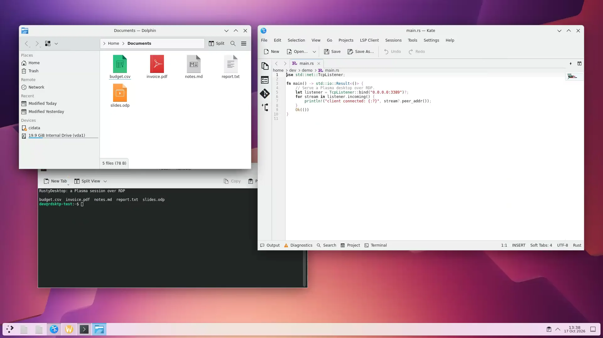

RustyDesktop is a headless RDP server for Plasma on Wayland. Log in with your Linux account from Windows mstsc, FreeRDP or Remmina and get your own real desktop session, with sound, clipboard, shared folders and printers.

A Plasma session on Debian 13 served by rdsktp and captured from its RDP stream.
Each user who connects gets a genuine logind/KDE session, started after a PAM login. Close the client, come back later: your windows are still there.
PAM authentication over TLS with your existing accounts. One isolated session per user, with throttling per client address and per account.
After a cut, mstsc and FreeRDP reconnect by themselves, without the password. The session and its applications are kept.
H.264 over the RDP graphics pipeline (EGFX), software OpenH264 or GPU VA-API, with bitrate adapted to the client's link.
Tested with Windows mstsc, FreeRDP (xfreerdp, sdl-freerdp) and Remmina.
Up to 16 monitors, dynamic resize through Display Control, layouts that follow the client.
Text, images and files in both directions, including very large files streamed without being stored.
Session sound played on the client.
Folders shared by the client appear in your Linux session as ordinary read-write folders (FUSE).
Client printers show up as CUPS queues, with raw or XPS jobs depending on the printer driver.
Keyboard, mouse and cursor shapes.
Packages for x86_64 and aarch64 are attached to every GitHub release.
| Format | Targets |
|---|---|
.deb | Debian 13 |
.rpm | Fedora, Rocky Linux / RHEL 9 and 10 |
.tar.gz | any of the above (./install.sh) |
Run-time dependencies: fuse3, libopenh264, libkscreen. Recommended for printers: cups, ghostscript.
systemctl enable --now rdsktp-authd rdsktp
3389 with a Linux account and its password.Configuration lives in /etc/rdsktp/rdsktp.conf, fully commented, with drop-ins in rdsktp.conf.d/. Every setting is explained in the documentation.
RustyDesktop is young. Here is what does not work, or is not verified, today.
Hexagonal architecture: the domain has no I/O, so it is tested without a compositor or a network.
Measured with cargo-llvm-cov, with a stricter target on parsers, protocols and business logic.
End-to-end tests drive Windows mstsc, FreeRDP and Remmina against a Debian VM, in login mode as well.
Every crate is documented with rustdoc, ports and domain included. Browse the API reference.
RustyDesktop exists thanks to these projects and their maintainers. Thank you.
libkscreen.Cargo.lock, all under permissive licenses.Bug reports with your versions and environment are the most useful contribution.